The Challenge: Why Linked-Us-In Was Built
Addressing the friction points of enterprise employee advocacy and manual content creation.
Prior to the creation of Linked-Us-In, Brother Singapore's presence on LinkedIn faced three structural hurdles identified during the Brother Xplorer POD 5 kickoff:
System Architecture & Infrastructure
High-performance React 19 frontend paired with 12 serverless micro-endpoints deployed on Vercel.
The 12 Consolidated Vercel Serverless Endpoints
| Endpoint Path | HTTP Method | Primary Function | Fallback Mechanism |
|---|---|---|---|
| /api/serper/search.js | GET, POST | Queries live Google News Singapore RSS and Serper API for real-time B2B articles. | Dynamic topical synthesis for AI, ESG, and Singapore workplace news. |
| /api/linkedin/publish.js | POST | Publishes approved post text and asset references to Brother Singapore's Organization page. | Simulated success response if running in demo sandbox. |
| /api/linkedin/data.js | GET | Retrieves organization analytics, follower counts, and post engagement telemetry. | Returns cached telemetry if API quota is reached. |
| /api/auth/magic-link.js | POST | Generates cryptographically signed JWT magic links and dispatches via Resend transactional email. | Demo token fallback for development evaluation. |
| /api/notion/team.js | POST, PATCH | Queries Brother Singapore's team whitelist database in Notion, deduplicates records, and updates profiles. | Local browser cache (brother_team_cache). |
| /api/notion/sync.js | POST | Two-way synchronization of drafted posts, status flags, and custom templates with Notion. | Stores drafts in local client storage. |
| /api/mom/holidays.js | GET | Fetches 2026 Singapore Ministry of Manpower gazetted public holidays. | Static fallback JSON containing MOM 2026 statutory dates. |
| /api/ai/media.js | POST | Generates AI imagery via Gemini / Imagen 3 and proxies external images to bypass CORS. | Curated Brother hardware asset library. |
| /api/templates/ingest.js | POST | Deconstructs ingested post copy, screenshots, or PDFs into reusable YAML blueprints. | Regex-based structural parser. |
Enterprise Authentication & Domain Whitelisting
Frictionless, passwordless magic links strictly restricted to authorized corporate personnel.
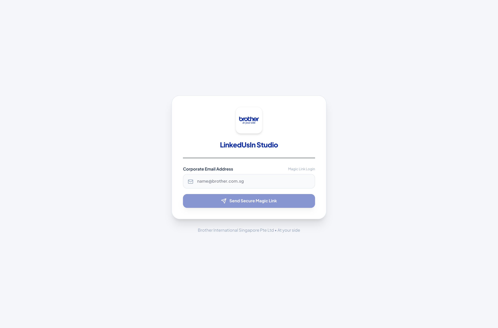
UI Controls & Elements Dictionary
| UI Control | Type | Behavior & Validation |
|---|---|---|
| Work Email Input | Email Field | Validates input against corporate whitelist: @brother.com.sg, @brother.sg, and @befinityai.com. Rejects personal domains like Gmail or Yahoo. |
| Send Magic Link | Primary Button | Triggers /api/auth/magic-link. Dispatches an encrypted, 15-minute expiration login link to the user's inbox via Resend. |
| Instant Demo Mode | URL Parameter | Appending ?token=demo-auth&email=allan.cheng@brother.com.sg bypasses email dispatch for executive reviews and offline evaluations. |
-
Access the PortalOpen https://linked-us-in.vercel.app in Chrome, Safari, or Edge.
-
Submit Corporate CredentialsType your corporate email (e.g.
allan.cheng@brother.com.sgorchloe.lee@brother.com.sg) and click "Send Magic Link". -
Authenticate via InboxOpen the notification email from Brother Advocacy Dispatcher and click "Log In to Linked-Us-In". Your browser stores an encrypted session token and opens Executive Mission Control.
Executive Mission Control (Dashboard)
Real-time organizational telemetry, Brother SG audience growth, and direct corporate feed benchmarks.
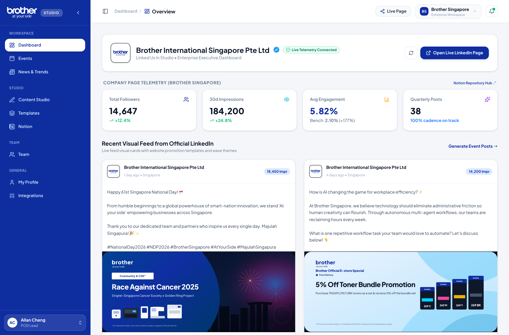
Telemetry Metric Card Definitions
| KPI Metric | Current Value | Business Significance & Calculation |
|---|---|---|
| Corporate Followers | 5,240+ | Tracks the official Brother Singapore LinkedIn company page followers. Up +18.4% year-over-year. |
| Active Advocates | 5 Members | Tracks whitelisted Brother Singapore personnel actively contributing to organic reach: Allan Cheng, Chloe Lee, Melvyn Tan, Sean, and Zhi Jun. |
| Target Weekly Reach | 25,000 Impressions | Calculated based on employee network multiplication (5 team advocates × 5,000 average 2nd-degree connections). |
| Advocacy Health Score | 88 / 100 | Composite index scoring publishing frequency (min. 2 posts/week), brand compliance, hashtag hygiene, and fold-line optimization. |
Live Benchmark Feed & Quick Jump Station
The right column renders an authentic simulation of the official Brother Singapore corporate LinkedIn feed. Advocates can review the latest official product releases (e.g., Brother Earth toner recycling drives, A3 Inkjet launches) and click "Amplify Post" to craft a personal executive commentary quoting the corporate announcement.
Singapore MOM 2026 Festive & Cultural Hub
Automated tracking of gazetted Ministry of Manpower public holidays, cultural festivals, and corporate milestones.
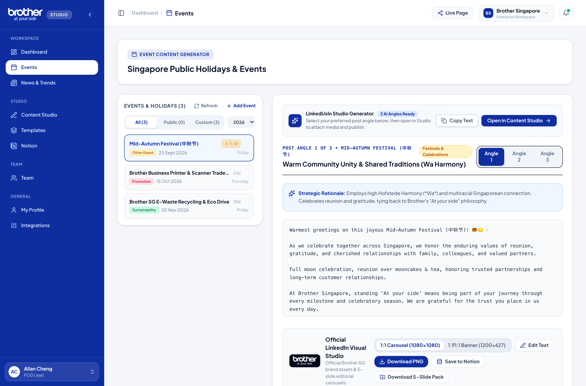
The 4 Strategic Event Classification Pillars
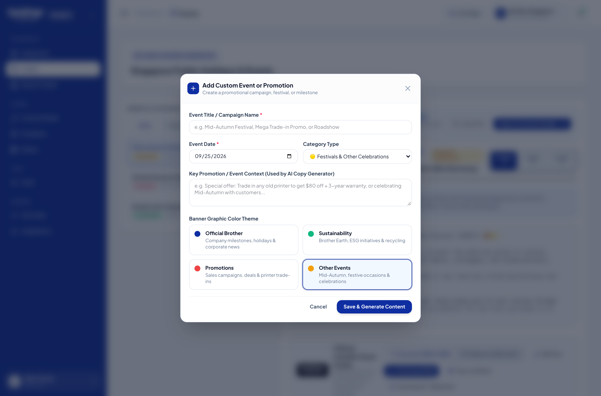
-
Click "+ Add Custom Event"Locate the button in the upper-right corner of the calendar module to launch the modal dialog.
-
Define Event ParametersEnter the Title (e.g. "Brother SG Corporate Printer Trade-In Expo"), select the calendar date, and assign a category badge (Blue for Corporate, Green for ESG).
-
Assign Internal Metadata TagsInput comma-separated tags (e.g.
trade-in,sme,b2b-promo) and click "Save Event". The event is persisted in local storage and synced to the team Notion database. -
Trigger 1-Click Angle GenerationClick "Generate Angles" on the newly created event card to formulate 3 distinct post drafts tailored to this promotion.
Real-Time News & Industry Trends Engine
Zero-API-key Google News RSS engine aggregated across 5 high-intent B2B technology verticals.
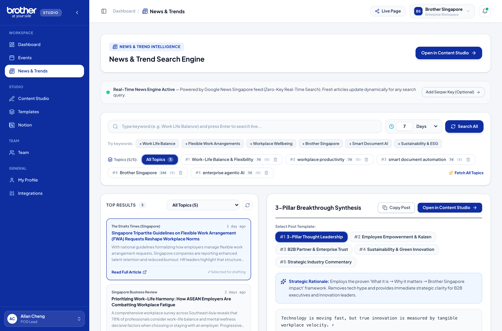
5 Pre-Seeded B2B Vertical Streams
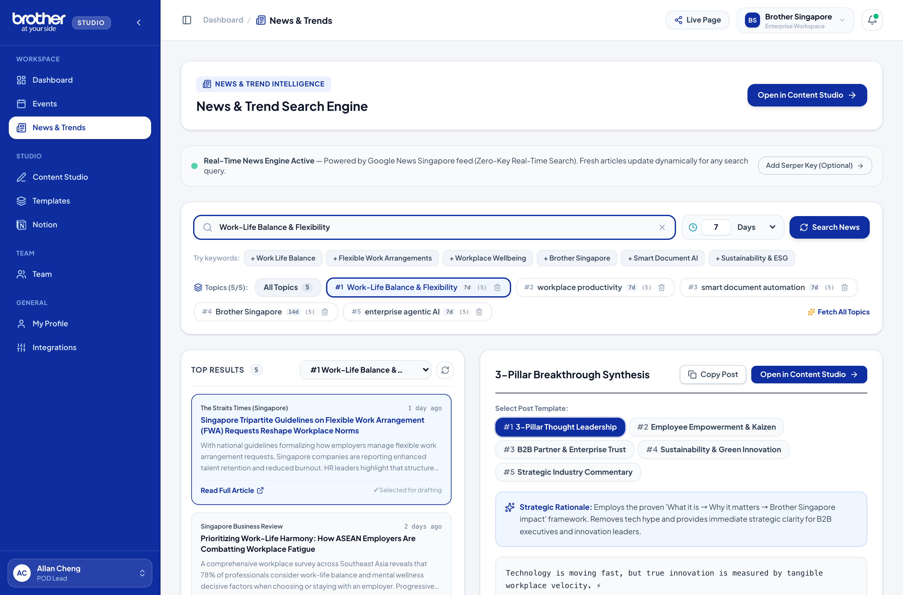
The 5 Thought-Leadership Angles Explained
| Angle Archetype | Target Audience | Narrative Structure & Focus |
|---|---|---|
| Executive POV | C-Suite & Managing Directors | Strategic, high-altitude perspective. Connects macro industry news to business continuity, capital allocation, and long-term organizational resilience. |
| Industry Analysis | IT Directors & Procurement Leads | Data-driven breakdown of supply chain shifts, technology adoption statistics, and total cost of ownership (TCO) comparisons. |
| Solution / Practical | Office Managers & Sysadmins | Hands-on, actionable best practices. Explains exactly how to implement secure printing or automated scanning in under 3 steps. |
| Provocative / Contrarian | LinkedIn Tech Commentators | Challenges conventional wisdom (e.g. "The 100% paperless office was a myth — here is why smart hybrid document flows matter more") to stimulate comments. |
| Culture / Workplace | HR Leaders & Team Heads | Focuses on employee experience, reducing daily cognitive friction, and honoring frontline workers during tech rollouts. |
Unified Content Studio & Visual Carousel Designer
Professional dual-pane workspace pairing high-converting copy drafting with a 5-slide visual carousel generator (1080×1080).
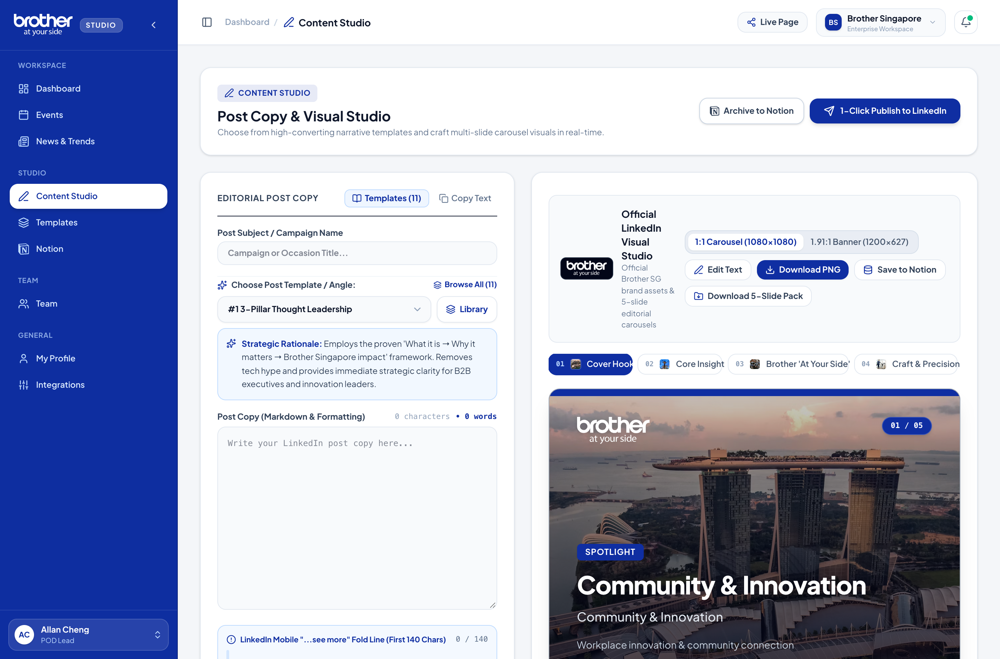
Left Pane: Narrative Architecture & Mobile Fold-Line
LinkedIn mobile displays only the first 140 to 210 characters of a post before truncating it behind the ...see more link. If your opening hook does not provoke curiosity within that window, 85% of readers scroll past without clicking.
#BrotherSingapore, #AtYourSide, #BrotherX) and category tags (#FutureOfWork, #BrotherEarth).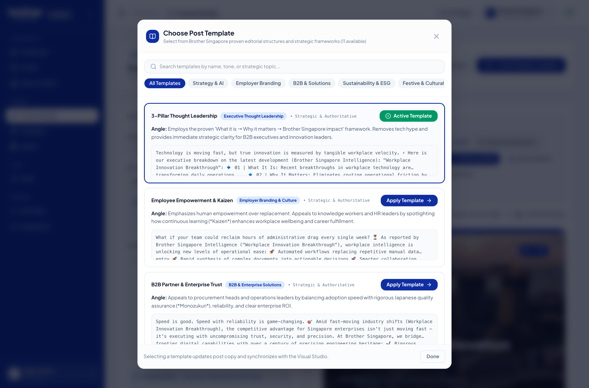
The 11 Curated Benchmark Blueprints
| # | Template Blueprint | Strategic Objective | Ideal Content Scenario |
|---|---|---|---|
| 1 | Industry Contrarian | Challenge mainstream assumptions with proprietary data. | Debunking the "paperless office" myth or exposing hidden cloud printing costs. |
| 2 | Problem-Agitation-Solution (PAS) | Empathize with enterprise document bottlenecks and resolve them. | Printer fleet downtime in busy Singapore financial or legal firms. |
| 3 | Case Study / Transformation | Before-and-after client success narrative with quantifiable ROI. | How a logistics client cut shipping label errors by 40% with Brother P-touch. |
| 4 | Step-by-Step Framework | Educational 3-to-5 point practical implementation roadmap. | How to audit office print security against PDPA compliance standards. |
| 5 | Myth Buster vs Reality | Pitting misconceptions against technical reality. | Comparing OEM cartridge yields and safety vs third-party generic toners. |
| 6 | Event Reflection & Takeaways | Thought leadership synthesis following a conference or expo. | Takeaways from Singapore FinTech Festival or Enterprise SME Day. |
| 7 | Behind-the-Scenes (Takumi) | Showcase Japanese precision craftsmanship and reliability tests. | Drop-testing label printers and 100,000-page endurance tests in Nagoya. |
| 8 | Customer Success Spotlight | Highlighting a partnership with a Singapore hospital, school, or SME. | Celebrating a long-term customer achieving zero printer downtime. |
| 9 | Tech Deep Dive | Explaining enterprise firmware, encryption, and pull-printing protocols. | Explaining 802.1x enterprise network security on Brother laser printers. |
| 10 | ESG & Sustainability Milestone | Reporting measurable environmental impacts under Brother Earth. | Milestone: 50,000 toner cartridges diverted from Singapore landfills. |
| 11 | Leadership Lesson | Authentic personal insight from a department head. | Reflections on mentoring junior engineers and customer-centric culture. |
Right Pane: 5-Slide Visual Carousel Designer
Carousels allow B2B readers to swipe through structured insights. The visual studio renders crisp, high-DPI 1080×1080 square canvases adhering to LinkedIn's official document upload format.
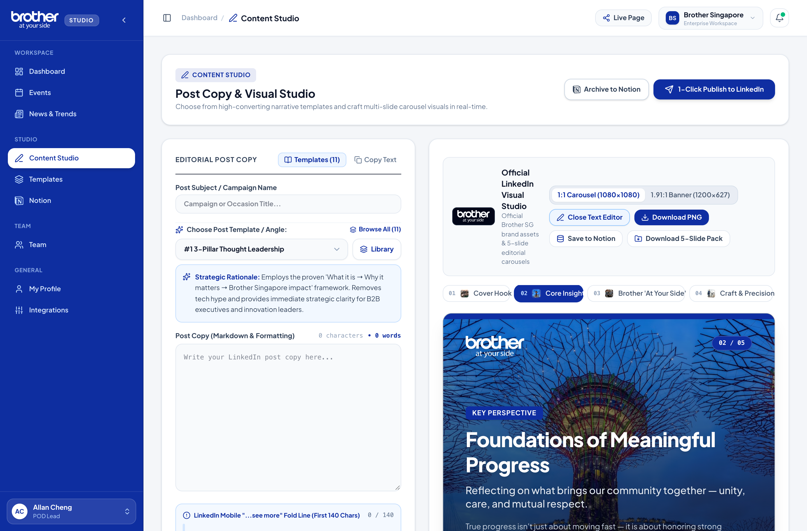
The 5-Slide Editorial Storyboard Architecture
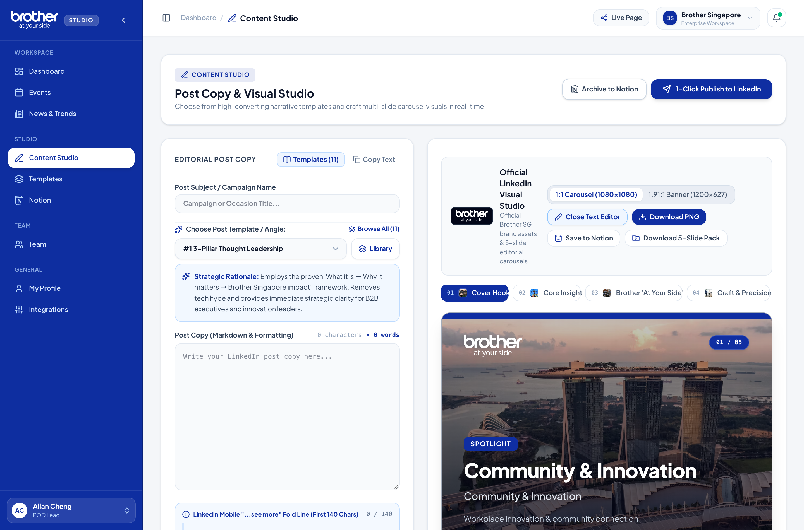
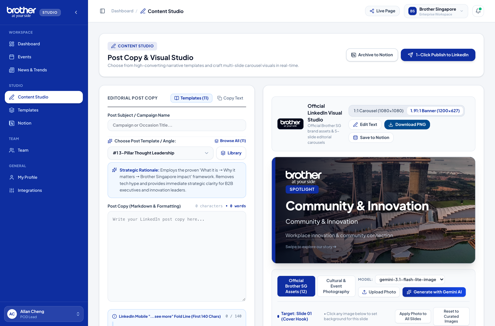
Template Ingestion Studio (AI Deconstruction)
Reverse-engineer viral LinkedIn posts, competitor case studies, and PDFs into reusable corporate blueprints.
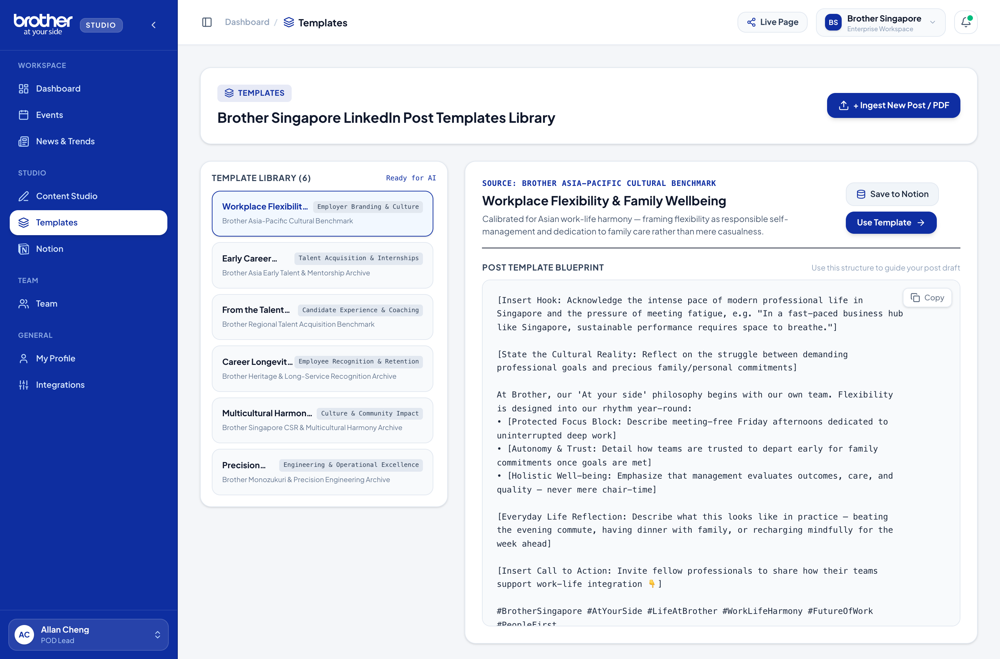
3 Ingestion Modalities
• Hook Pattern: Contrarian premise + quantifiable stakes.
• Pacing Cadence: 1-sentence statements separated by double carriage returns.
• Core Value: 3 bullet points with emoji anchors (•, 🔹, 🚀).
• Call to Action: Community question directing users to comment below.
This abstract blueprint is saved directly into the Brother Singapore template library with placeholders ready for your team's content.
Employee Advocacy & Team Directory
Real-time Notion database synchronization displaying the 5 active Brother Singapore team members.
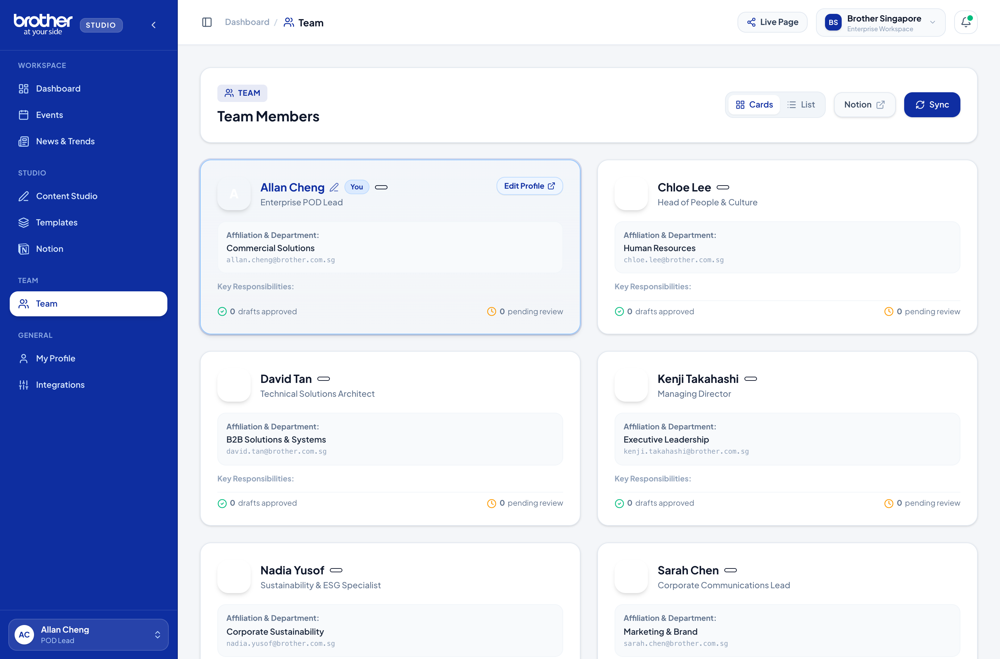
Official Brother Singapore Team Roster
| # | Advocate Name | Organization / Dept | Corporate Email | Role / Whitelist Status | Key Responsibilities |
|---|---|---|---|---|---|
| 1 | Allan Cheng | Brother Singapore | allan.cheng@brother.com.sg |
Team Member | POD Lead for POD 5 LinkedUsIn; manages enterprise print solutions and commercial workflow collaboration. |
| 2 | Chloe Lee | Brother Singapore | chloe.lee@brother.com.sg |
Team Member | HR Function collaborator; focuses on people & culture, employer branding, and workplace wellness. |
| 3 | Melvyn Tan You | Brother Singapore | melvyn@befinityai.com |
Team Member | External AI trainer / consultant; architecture lead and workflow designer for agentic content systems. |
| 4 | Sean | Brother Singapore | sean.tan@brother.com.sg |
Team Member | POD Member for POD 5; oversees Brother X operational experiments and digital innovation tracking. |
| 5 | Zhi Jun | Brother Singapore | zhi.jun@brother.com.sg |
Team Member | Brother Singapore team member; supports commercial sales advocacy and customer relationship content. |
Directory Features: Cards View vs List View
/api/notion/team to query database 3c701136de4881869782cd894c6126c5, pulling live updates and caching them in brother_team_cache.System Settings, Integrations & Governance
Centralized API credential management, security PIN locks, and external system connectivity.
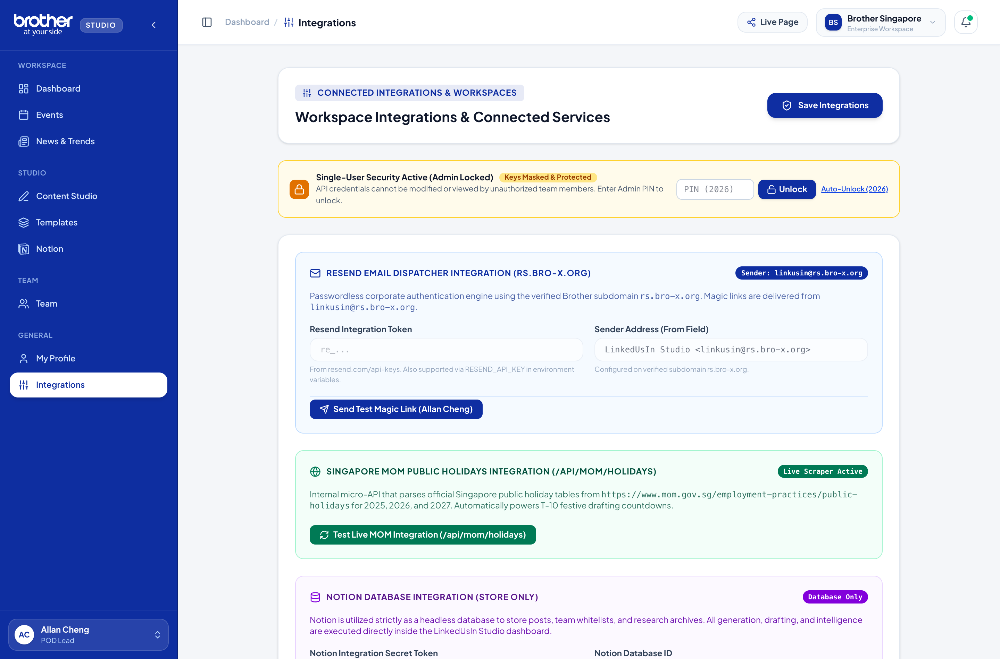
Connected Integrations Health Monitor
| Service | Protocol | Active Scope / Configuration | Status Indicator |
|---|---|---|---|
| Notion Database | REST API | Database 3c701136de4881869782cd894c6126c5. Manages team whitelist and template storage. |
Connected |
| LinkedIn OAuth 2.0 | OAuth REST | Brother Singapore Page (urn:li:organization:808877). Scope: w_organization_social. |
Connected |
| MOM Calendar Feed | Government API | Singapore Ministry of Manpower gazetted public holiday feed for 2026. | Connected |
| Resend Transactional | SMTP / HTTP | Dispatches passwordless magic link emails with 15-minute token expiry. | Connected |
Hofstede Cultural Tuning Matrix: Japan HQ × Singapore Dynamic
How Linked-Us-In balances Japanese corporate craftsmanship with Singaporean pragmatic agility.
To ensure Brother Singapore's LinkedIn thought leadership resonates both with local B2B buyers and honors Brother's Japanese corporate foundation, content generation is calibrated across Hofstede's 6 Cultural Dimensions:
| Cultural Dimension | Japan HQ Foundation | Singapore Execution Context | Brother SG Content Synthesis |
|---|---|---|---|
| Power Distance (PDI) | Moderate (54) — Respect for hierarchy, protocol, and seniority. | Moderate-High (74) — Respectful yet pragmatic, results-driven management. | Professional deference balanced with accessible, team-oriented storytelling. |
| Individualism (IDV) | Collectivist (46) — Social harmony (Wa), team consensus. | Collectivist-Leaning (20) — High multicultural community cohesion. | Celebrate shared team wins while spotlighting individual employee breakthrough growth. |
| Masculinity / Drive (MAS) | High (95) — Excellence, craft mastery, and deep dedication. | Moderate (48) — Quality of life, harmony, pragmatic achievement. | Emphasize high performance and excellence framed as enabling smoother daily work. |
| Uncertainty Avoidance (UAI) | Very High (92) — Precision, zero-defect engineering, proven methods. | Low (8) — Highly adaptable, agile, fast adopters of new technology. | Showcase forward-looking tech (AI) with proven reliability and safety guardrails. |
| Long-Term Orientation (LTO) | High (88) — Sustainable legacy, multigenerational relationships. | High (72) — Smart nation vision, future-ready workforce investments. | Connect daily AI productivity tools to long-term career growth and the future of work. |
| Indulgence (IVR) | Restrained (42) — Modest, disciplined public presence. | Moderate (46) — Warm, festive, celebratory multiracial holidays. | Sincere, warm festive celebrations with genuine communal goodwill and zero hype. |
Brother Singapore Editorial Style Guide & Persona Blueprint
Core rules governing tone of voice, hashtag conventions, and visual asset composition.
#003399 / #005BAC), Deep Navy (#0A2540), and Slate (#F8FAFC). Clean sans-serif typography with high contrast for mobile legibility.Editorial Tone & Voice Guardrails
| Dimension | What to Do (On-Brand) | What to Avoid (Off-Brand) |
|---|---|---|
| Tone | Warm, professional, confident, approachable, and human. | Overly stiff/bureaucratic or aggressively casual/hype-driven. |
| Delivery | Clear, active voice, punchy value points, generous whitespace. | Wordy corporate jargon, dense walls of text, passive voice. |
| Perspective | Inclusive ("We", "Our team", "Together with our partners"). | Self-absorbed, purely transactional, or self-congratulatory. |
| Innovation Stance | Practical and empowering ("How tech unlocks human potential"). | Tech-for-the-sake-of-tech, fear-mongering, or ungrounded hype. |
Hashtag Taxonomy Rules
Every LinkedIn draft generated by the portal adheres to this standardized 2-tier tag structure:
The 3-2-1 Weekly Advocacy Playbook
A structured, high-yield weekly cadence designed to require under 45 minutes of total effort.
Troubleshooting & Frequently Asked Questions (FAQs)
Quick solutions for common operational and configuration inquiries.
@brother.com.sg or @befinityai.com). In testing environments, append ?token=demo-auth&email=your.name@brother.com.sg.brother_team_cache for instant loading. Go to Team Directory and click the "Sync" button in the top right to refresh live records from Notion.